| 日付 | 2016年2月6日（土） |
|---|---|
| 山域 | 房総 |
| メンバー | 家族（妻、長女・4歳、長男・2歳） |
| 山行形態 | 子連れ日帰り |
| アクセス | 車 |
| ルート (Map) | 駐車スペース (8:22) - (8:36) 登山口 - (9:33) 東京湾を望む展望台 - (9:59) 鋸山 (10:33) - (11:39) 観月台 (12:13) - (12:26) 駐車スペース |
温暖な房総の山に登ろうと思い、いろいろ調べてみたが、
なかなか魅力的な山が見つからない。
結局、過去2度登っている鋸山に再度行くことにする。
前回は南側から登っているので、今回は北側から登る予定だ。
道端の空いたスペースに車を停めて歩き出す。標高20m。
息子は全く歩く気無しで、早速キャリアに乗っている。
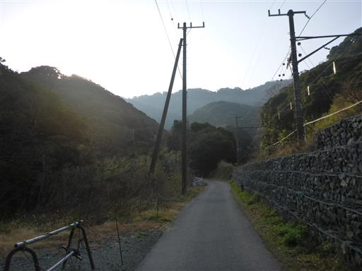
ひかり藻の案内標識が立っている。
穴の中を覗きこんでみたが、それらしいものは見当たらない。水が溜まった陰気な穴だ。
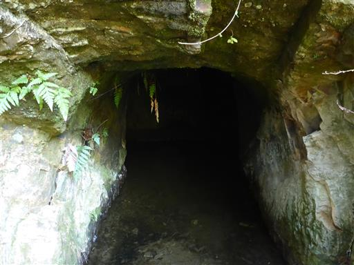
見上げると、鋸山の特徴的なぎざぎざの稜線が見える。
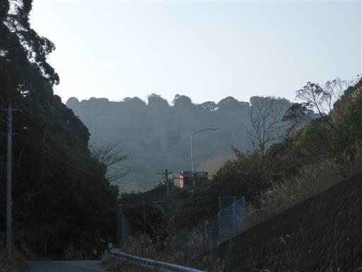
観月台コースとの道を分け、車力道コースの入口に到着する。
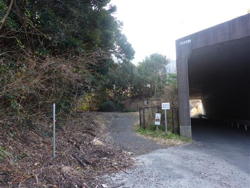
石が切り取られて、切通しになっている。
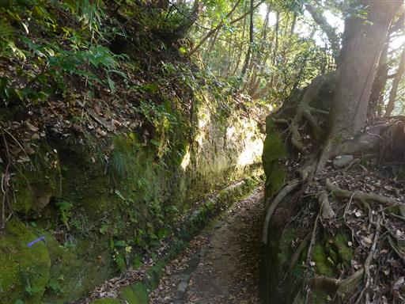
誰かが木の枝で作った橋の下を潜る。
特に有用な橋とは思えないのだが、子供が遊びで作ったのだろうか？
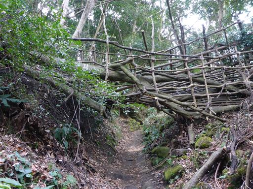
途中から息子も歩き出す。
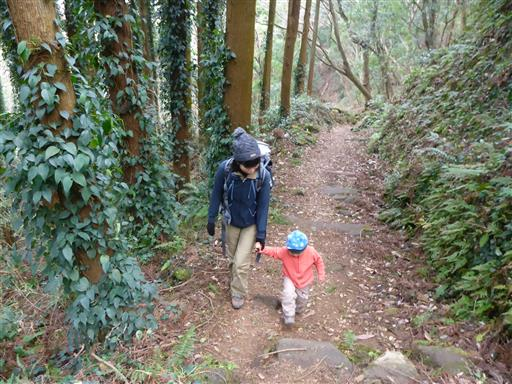
赤い実がたくさん落ちている。
どこから落ちたものか探してみたら、杉の木に巻き付いている植物が大量に赤い実を付けている。
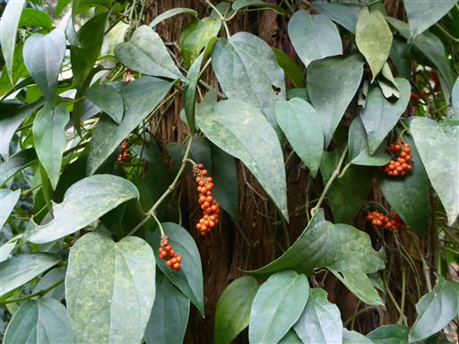
鋸山はかつて採石が盛んに行われていて、石はこの車力道を使って運ばれた。
足元は石が敷き詰められていて頑丈にできている。
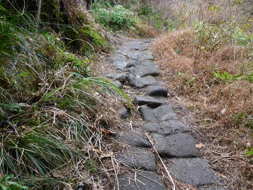
石切場に到着する。石がきれいに切り取られている。
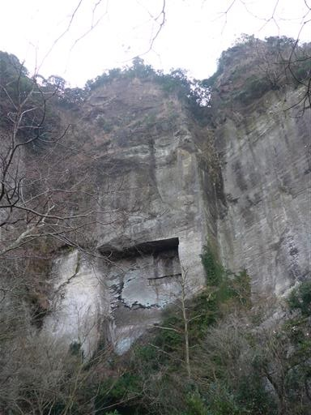
大きな穴が開いている部分は、煉瓦を積んで天井が支えられている。
なぜ上部から切り取って行かないのだろうか？
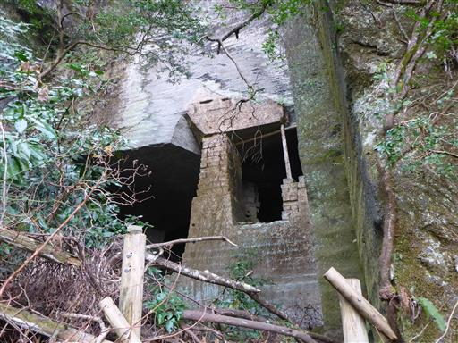
緩やかな道が続いていたが、途中から延々と続く急階段が始まる。
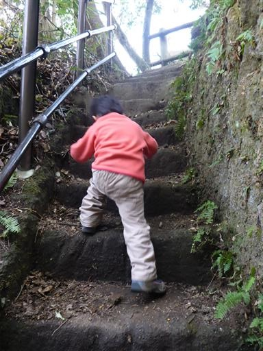
階段を登って行くと少しだけ展望が広がる。今日は景色が霞んでいる。
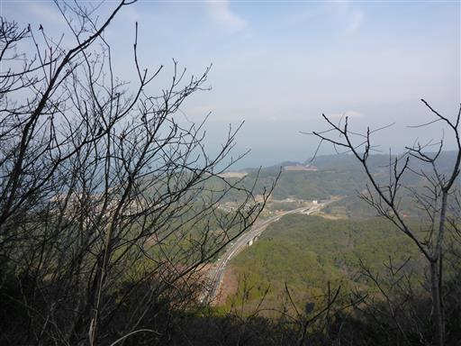
一段一段が高いため非常に登りにくい。
息子にとっては太腿～腰位の高さで、苦戦している。
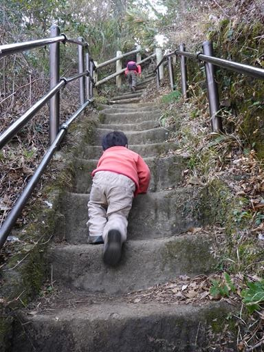
稜線に到達し、しばらく歩くと「東京湾を望む展望台」に到着する。
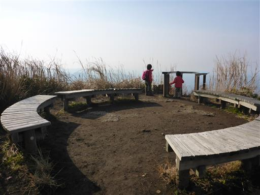
名の通り東京湾の展望が良い。

鋸山の稜線を見渡す。
先の方は日本寺の境内で、地獄のぞきやロープウェイの山頂駅などがある。
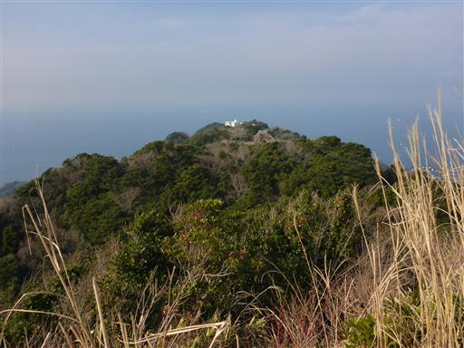
山頂に向けて稜線を歩く。傾斜は緩やかだがアップダウンが連続する。
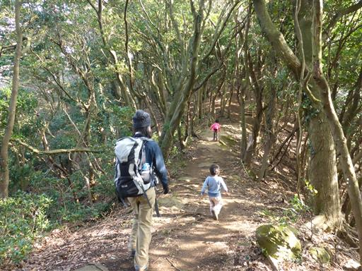
鋸山の山頂に到着。標高330m。
息子はここまで頑張って歩き通した。
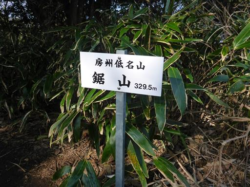
一等三角点の山だが、展望は一角に開けるのみだ。
見えるのも低い山々で冴えない展望だ。
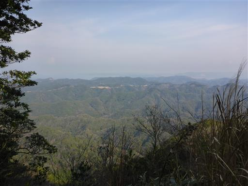
昼食を取ったら下山を開始する。息子は下り初めは歩かずキャリアに乗る。
登りが大変だった急階段は、下りも大変だ。
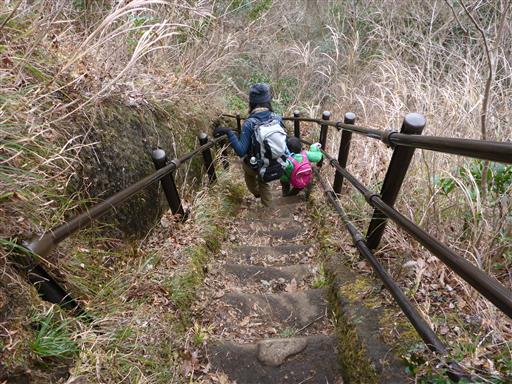
車力道への分岐点と分かれて、石切場経由の観月台コースを下山する。
石切場跡の中はまるで巨大迷路みたいだ。
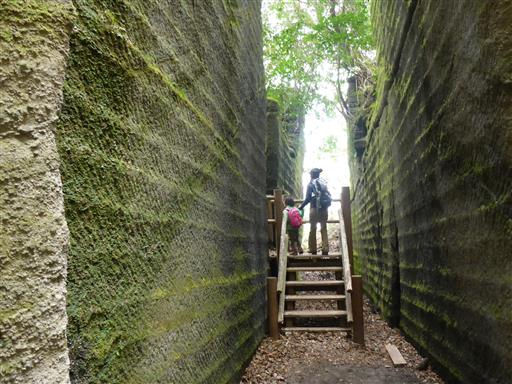
巨大な四角い穴。まるでブロックを積み上げたような姿だ。
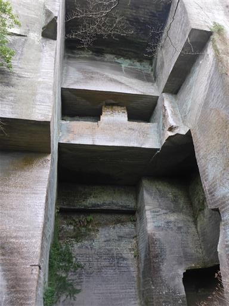
その一角に仏様が彫り込まれている。
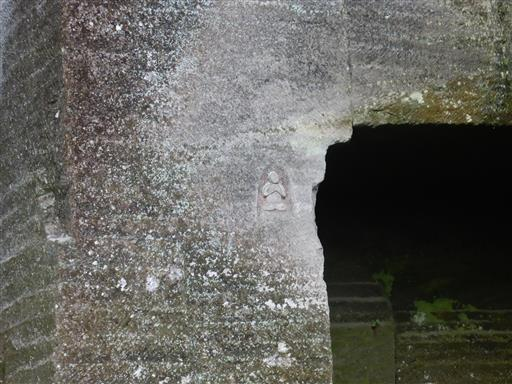
見上げると鋸山の名所・地獄のぞきが見える。
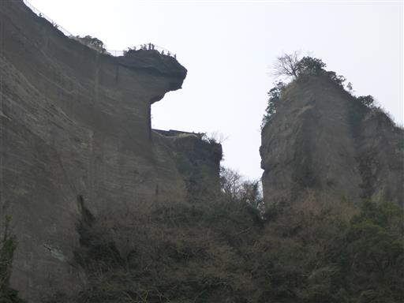
壁面に安全第一の文字が彫られている。
ここは切り取られた石の断面から、採石手法の時代の変遷が見て取れる。
安全第一の文字の上の部分はつるはしで、その下はチェーンソーで石が切られている。
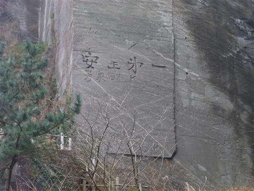
古くて錆びた道具が放置されている。

石切場跡を見学したら、有料の地獄のぞき方面はスキップして
観月台コースを下山する。息子は再びキャリアを下りて歩き出す。
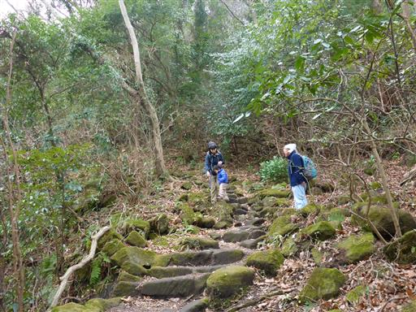
石を切ってできた階段道が続く。
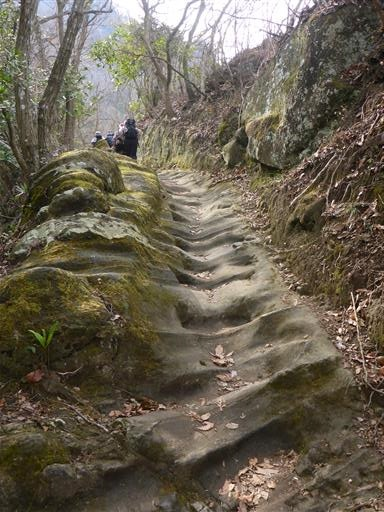
コースの名前になった観月台に到着する。
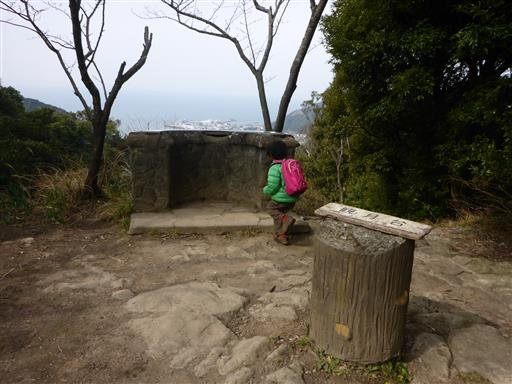
眼下には浜金谷港が見渡せる。
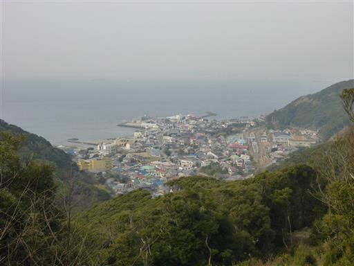
ここからは鋸山の稜線が良く見える。おやつ休憩を取ったら出発する。
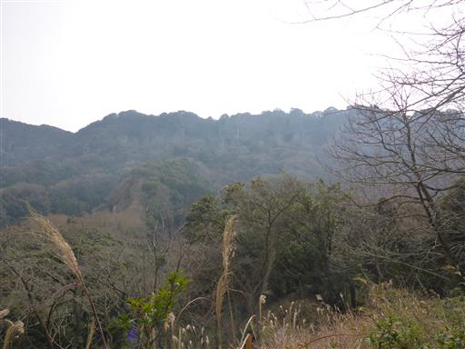
最後は美しい樹林帯の中を下って下山する。
以前来た際は石切場をゆっくり見学できなかったので、今回はゆっくり眺められてよかった。
息子はコースの半分以上を頑張って歩いていたので、今後期待が持てそうだ。
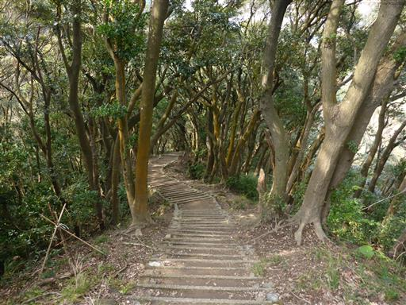